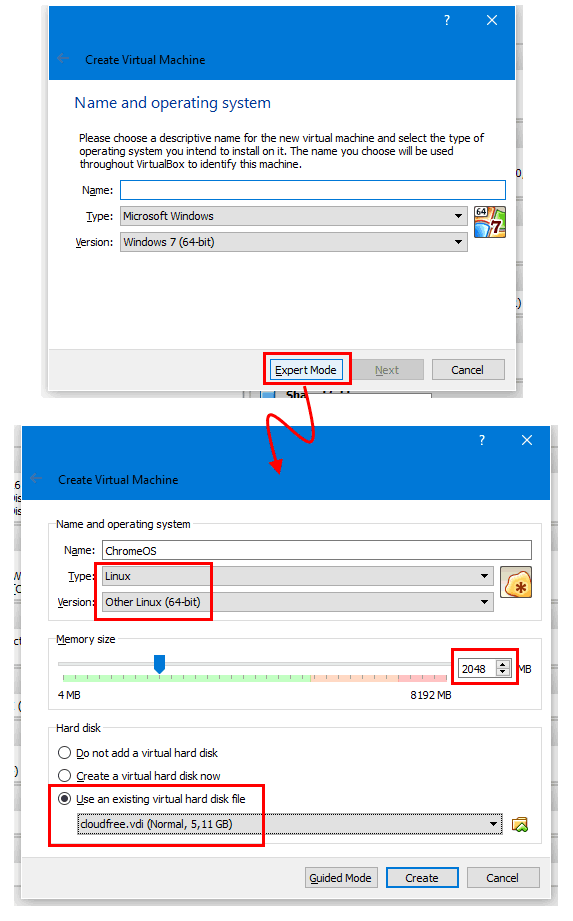

Volver atrás
Ejercicio 01.03.01.
ChromeOS.
Creación de la máquina virtual de ChromeOS.

Hazte con la copia de ChromeOS Lleva solo el HDD. Descomprimir. Crea una máquina virtual con Sistema Operativo Seleccionar el Botón Modo Experto. Tipo : Otro. Version : Otro Memoria 2048 Mb. No Agregar Disco Duro Virtual. Seleccionar la VM creada Seleccionar Configuración. General : Avanzado Compartir Portapapeles : Bidireccional. Sistema : Procesador Habilitar PAE/NX Aceleración: Predeterminada Habilitar todo. Pantalla Memoria Video 128 Kb. NO HABILITAR aceleracion ni 2D ni 3D Almacenamiento Copiar el .vdi Añadir el disco Red Seleccionar NAT Seleccionar Intel PRO MT Desktop
Iniciar Configurar Pais, teclado, etc. Usar Disco Existente : Seleccionar el disco pasado. Selecciona PAE/NX en Sistema-Procesador Seleccionar en Red NAT con adaptador INTEL PRO 1000 Crea la VM Añade el disco a la carpeta creada Luego añade el disco a la VM. Ejecuta y configur